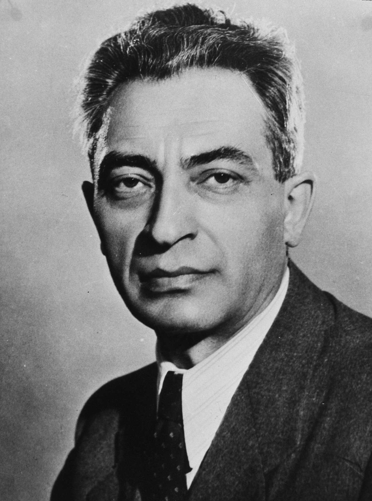

Gerő Ernő rádióbeszéde hatalmas felháborodást keltett a budapesti tüntetők körében, majd Nagy Imre Kossuth téri szereplése általános csalódást okozott.
A tömeg egy része ezért felháborodásában a Magyar Rádió Bródy Sándor utcai épülete elé vonult. Itt azonban az Államvédelmi Hatóság őrségként odavezényelt felfegyverzett egységei fogadták őket. Miután sem könnygázzal, sem tűzoltófecskendőkkel nem tudták a rohamosan növekvő emberáradatot feloszlatni, a rádió vezetése a tömeg rendelkezésére bocsátott egy felvevőkocsit, hogy a tizenhat pontot beolvashassák. Azonban hamarosan kiderült, hogy becsapásról van szó, mivel az elhangzottakból semmit nem közvetítettek. A tüntetők ezért a felvevőkocsival betörték az épület kapuját. A rádió vezetése ezután hajlandó volt fogadni egy tárgyalóküldöttséget, akiket azonban úgy tűnt, hogy odabent letartóztattak.
Az összegyűlt tömegben egyre inkább elszabadultak az indulatok. A híradóezred katonái megpróbálták a Múzeum körútig szorítani a tömeget szuronyt szegezve rájuk. Ekkor azonban két, erősítésként érkezett harckocsi tévedésből áttörte a kordont, és nyomukban a tömeg újra a főbejárathoz nyomult. Ekkor a sötétben a katonák lövöldözni kezdtek a levegőbe, amit az épületben levő ÁVH-katonák támadásként értelmeztek és tüzet nyitottak a tömegre. Egy katonatiszt meghalt és két tüntető megsebesült. Az ÁVH egy mentőautóban megpróbált lőszer- és fegyverutánpótlást bejuttatni az épületbe, de a tüntetők leleplezték és megakadályozták az akciót. A rádióhoz kivezényelt katonák közül erre egyre többen átálltak a tüntetők pártjára, illetve átadták fegyverüket, a sapkájukról pedig letépték a vörös csillagot. A tüntetők között ezenkívül több gyári munkás is fegyvert osztogatott, amelyeket az időközben feltört budapesti fegyverraktárakból szereztek.
Két órával a véletlen incidens után a lövöldözés kiújult, és ezzel kezdetét vette a budapestiek fegyveres felkelése. A felkelők hajnalra elfoglalták a Rádió épületét. Az ottani stúdiók azonban addigra már használhatatlanná váltak, mivel a pártvezetőség lekapcsoltatta őket a rádióadóról, és a parlamentben rendeztek be ideiglenes stúdiót. Innen szólt a Kossuth Rádió műsora a forradalom alatt, és még a forradalom leverése után is, egészen 1957 áprilisáig. A lakihegyi adó november 7-én kezdett ismét műsort sugározni. Az adótornyokat a stúdióval összekötő kábel sértetlen maradt, de a forradalom napjaiban a vidéki adók a központitól eltérő műsort sugároztak, vagy hallgattak.